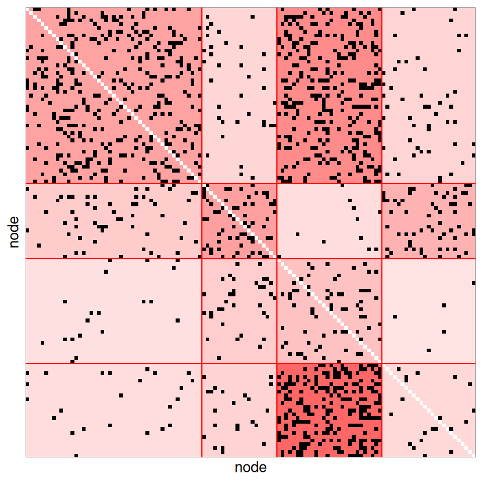
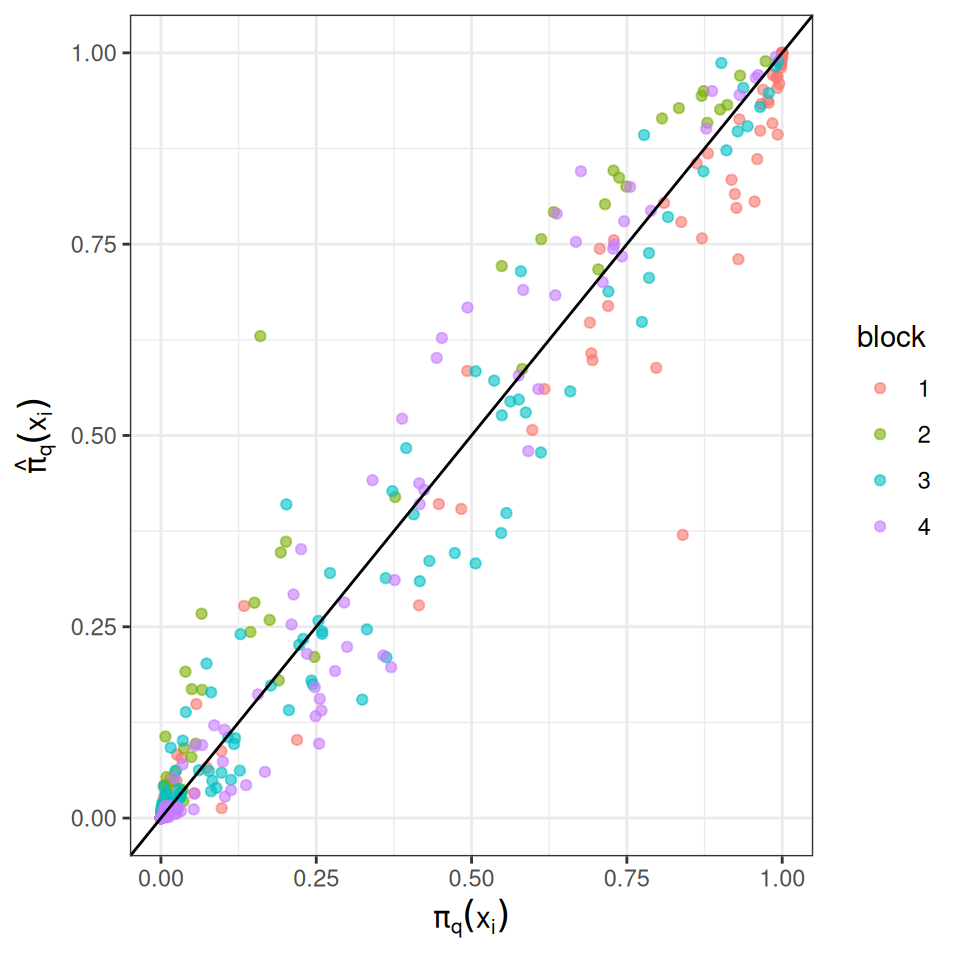
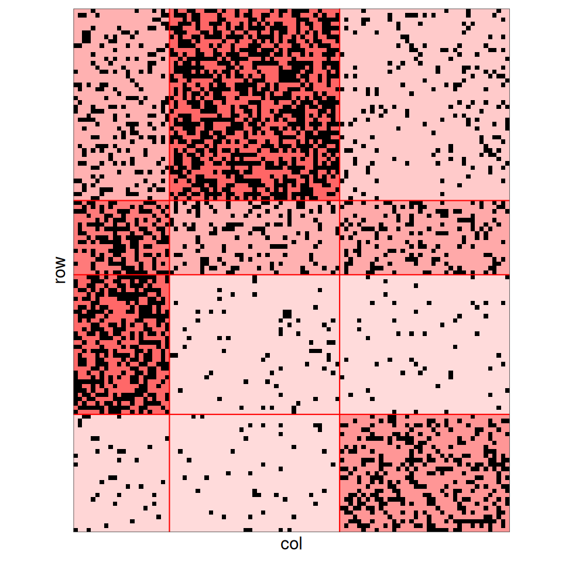
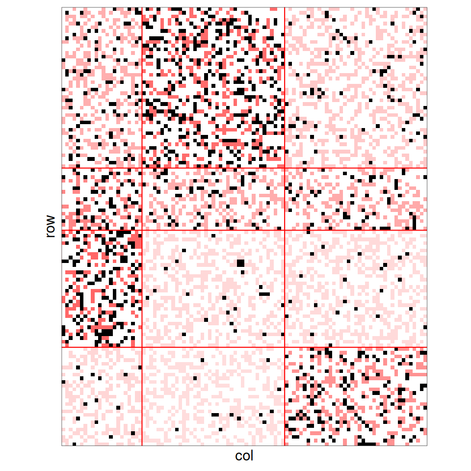

Stochastic Block Models with covariates on nodes
2026-11-09
Source:vignettes/SBM_nodes_covariates.qmd
1. Introduction
In a standard Stochastic Block Model (SBM), the nodes are assigned to blocks independently, with the same prior probabilities for all nodes. When some characteristics of the nodes are known (age, size, species traits…), it is natural to let these characteristics drive the probability of belonging to each block.
This vignette shows how to:
- simulate and fit simple and bipartite SBM in which the block memberships depend on covariates on nodes;
- check that taking the covariates into account can improve the clustering, especially when the network is noisy;
- use the Integrated Classification Likelihood (ICL) to decide whether a covariate has an effect on the clustering.
The inference relies on a variational EM algorithm implemented in the package blockmodels (Leger 2016).
We use the Adjusted Rand Index (ARI) from package aricode to compare an estimated clustering with the true one (ARI equals for a perfect recovery, and is close to for a random clustering).
ARI <- aricode::ARI2. Simple SBM with covariates on nodes
2.1 The model
Consider a network of nodes, described by the adjacency matrix . Each node is described by a vector of covariates . The first covariate is the intercept: for all .
Each node belongs to one block . The memberships are independent and follow a multinomial logistic regression on the covariates: where . For identifiability, the last block is the reference: . The parameter is gathered in the matrix , whose last column is null. The coefficient is the effect of covariate on the log-odds of belonging to block rather than to block :
Given the blocks, the edges are independent and their distribution only depends on the blocks of the nodes they involve. In the Bernoulli case: Poisson and Gaussian emission distributions are also available, as in the standard SBM.
The case with no covariates
When the only covariate is the intercept (, ), no longer depends on and we recover the standard SBM with .
2.2 Model selection: the ICL
The parameters are estimated with a variational EM algorithm, for a range of numbers of blocks . The number of blocks, and more generally the model, is selected with the Integrated Classification Likelihood (ICL). For a model with blocks and covariates on nodes, the ICL computed by the package is where:
- is the integrated complete-data log-likelihood where the latent variables are integrated against to variational distribution .
- is the number of connectivity parameters for a directed Bernoulli SBM (would be for an undirected one), penalized by the logarithm of the number of dyads ( for an undirected one);
- is the number of free parameters in , penalized by the logarithm of the number of nodes .
Without covariates, and we recover the usual ICL of the SBM. Adding covariates increases the penalty, so the ICL favors the model with covariates only if they increase enough, mainly through the term . The number of blocks is chosen within each model, then the best model is the one with the highest ICL.
2.3 Simulation of a directed network
We simulate a directed binary network with nodes, blocks and covariates (the intercept and two Gaussian covariates).
set.seed(3)
n <- 120 # nodes
Q <- 4 # blocks
p <- 3 # covariates (including the intercept)
X <- cbind(1, matrix(rnorm((p - 1) * n), ncol = p - 1))
colnames(X) <- c("intercept", "x1", "x2")
head(X)
#> intercept x1 x2
#> [1,] 1 -0.96193342 -1.4954196
#> [2,] 1 -0.29252572 0.3678378
#> [3,] 1 0.25878822 0.5171440
#> [4,] 1 -1.15213189 -0.4843355
#> [5,] 1 0.19578283 0.6748556
#> [6,] 1 0.03012394 -0.7624486The matrix of the effects of the covariates is defined with the last block as reference (null last column).
For this trial, the connectivity matrix is drawn at random. The network is then simulated with sampleSimpleSBM, passing the covariates and their effects through the arguments nodesCovariates and nodesCovariatesParam.
Note
blockPropis not given: the block proportions are driven by the covariates.
alpha <- matrix(rbeta(Q * Q, 1, 8), Q, Q)
round(alpha, 2)
#> [,1] [,2] [,3] [,4]
#> [1,] 0.16 0.04 0.23 0.05
#> [2,] 0.07 0.17 0.01 0.12
#> [3,] 0.01 0.06 0.09 0.00
#> [4,] 0.02 0.05 0.31 0.03
mySampler <- sampleSimpleSBM(
nbNodes = n,
connectParam = list(mean = alpha),
model = "bernoulli",
directed = TRUE,
nodesCovariates = X,
nodesCovariatesParam = B
)
Z <- mySampler$memberships
Y <- mySampler$networkData
table(Z)
#> Z
#> 1 2 3 4
#> 47 20 28 25
plot(mySampler)
To assess the methods in a more difficult setting, we also build a noisy version of the network, in which each entry of is flipped with probability . The noisy network is still an SBM, with connectivity : the blocks are less contrasted, hence harder to recover from the network only.
2.4 Estimation by VEM
The SBM with covariates on nodes is fitted with estimateSimpleSBM and the argument nodesCovariates.
Intercept
The matrix of covariates must contain the column of ones if an intercept is wanted: it is not added automatically.
estimOptions <- list(verbosity = 0, plot = FALSE)
fitCovar <- estimateSimpleSBM(
Y, model = "bernoulli", directed = TRUE,
nodesCovariates = X,
estimOptions = estimOptions
)
fitCovar
#> Fit of a Simple Stochastic Block Model -- bernoulli variant
#> =====================================================================
#> Dimension = ( 120 ) - ( 4 ) blocks. No edge covariate(s). 3 node covariate(s).
#> =====================================================================
#> * Useful fields
#> $nbNodes, $modelName, $dimLabels, $nbBlocks, $nbCovariates, $nbDyads
#> $blockProp, $connectParam, $covarParam, $covarList, $covarEffect
#> $nbNodesCovariates, $nodesCovariates, $nodesCovariatesParam
#> $expectation, $indMemberships, $memberships
#> * R6 and S3 methods
#> $rNetwork, $rMemberships, $rEdges, plot(obj), print(obj), coef(obj)
#> * Additional fields
#> $probMemberships, $loglik, $ICL, $storedModels,
#> * Additional methods
#> predict, fitted, $setModel, $reorderFor comparison, we fit the standard SBM, without covariates.
fitNoCovar <- estimateSimpleSBM(
Y, model = "bernoulli", directed = TRUE,
estimOptions = estimOptions
)As usual, the number of blocks is selected with the ICL:
c(noCovar = fitNoCovar$nbBlocks, covar = fitCovar$nbBlocks)
#> noCovar covar
#> 4 4and the estimated clusterings can be compared to the true one:
For this particular case, the clusters are nearly perfectly recovered up to a label switching of the blocks.
2.5 Estimated effects of the covariates
The estimated matrix is given by the field nodesCovariatesParam, with the last block as reference.
round(fitCovar$nodesCovariatesParam, 2)
#> [,1] [,2] [,3] [,4]
#> [1,] -0.51 -2.16 -3.12 0
#> [2,] 3.12 1.46 7.39 0
#> [3,] 4.61 -3.27 0.35 0Label switching
The blocks being defined up to a permutation, the columns of are not in the same order as those of the true (used to simulate the data), and the reference block may differ. To compare them, we match each true block to its estimated counterpart, reorder the columns of accordingly and take the same reference block as in the simulation.
matchBlocks <- function(estimated, true) {
apply(table(estimated, true), 2, which.max)
}
perm <- matchBlocks(fitCovar$memberships, Z)
Bhat <- fitCovar$nodesCovariatesParam[, perm]
Bhat <- Bhat - Bhat[, Q]
rownames(Bhat) <- colnames(X)
round(Bhat, 2)
#> [,1] [,2] [,3] [,4]
#> intercept 1.65 -0.96 2.16 0
#> x1 1.66 5.93 -1.46 0
#> x2 7.88 3.62 3.27 0
B
#> [,1] [,2] [,3] [,4]
#> intercept 1.0 -2.01 2 0
#> x1 0.4 5.00 -2 0
#> x2 9.0 2.30 3 0We can now compare the resulting probabilities with their true values .
softmax <- function(eta) {
eta <- eta - apply(eta, 1, max)
exp(eta) / rowSums(exp(eta))
}
probs <- data.frame(
true = c(softmax(X %*% B)),
estimated = c(softmax(X %*% Bhat)),
block = factor(rep(1:Q, each = n))
)
ggplot(probs) + aes(x = true, y = estimated, color = block) +
geom_point(alpha = 0.6) + geom_abline(intercept = 0, slope = 1) +
labs(x = expression(pi[q](x[i])), y = expression(hat(pi)[q](x[i])))
2.6 Are the covariates selected?
On this network, the clusterings obtained with and without covariates are almost identical: the network alone is enough to recover the blocks. We still can check if the ICL favors the model with covariates. To check it, we also fit a model with two covariates drawn independently of everything else, hence unrelated to the blocks.
set.seed(123)
Xuseless <- cbind(1, matrix(rnorm(2 * n), ncol = 2))
fitUseless <- estimateSimpleSBM(
Y, model = "bernoulli", directed = TRUE,
nodesCovariates = Xuseless,
estimOptions = estimOptions
)
resClean <- data.frame(
covariates = c("none", "x1 + x2", "two useless covariates"),
nbBlocks = c(fitNoCovar$nbBlocks, fitCovar$nbBlocks, fitUseless$nbBlocks),
ARI = c(ARI(fitNoCovar$memberships, Z), ARI(fitCovar$memberships, Z),
ARI(fitUseless$memberships, Z)),
ICL = c(fitNoCovar$ICL, fitCovar$ICL, fitUseless$ICL)
)
kable(resClean, digits = 2)| covariates | nbBlocks | ARI | ICL |
|---|---|---|---|
| none | 4 | 0.98 | -4106.70 |
| x1 + x2 | 4 | 1.00 | -4014.78 |
| two useless covariates | 4 | 0.98 | -4117.72 |
Although the clustering is not improved, the ICL clearly selects the model with and , whereas the useless covariates are not selected. To understand why, recall that the ICL (see above) is based on , which contains the term : without covariates it is , with covariates it is .
The blocks being well predicted by the covariates, this term increases by 105.8, much more than the additional penalty 14.4 due to the additional parameters.
What the ICL selects
The ICL selects the covariates that predict the block memberships, even when they do not improve the clustering, as here. Conversely, covariates unrelated to the blocks are not selected. Comparing the ICL of models with and without covariates therefore assesses whether the covariates explain the memberships, not whether they change the clustering.
2.7 Gain in clustering
We now fit both models on the noisy network and compare the ARI of the four estimated clusterings. The aim is to illustrate the fact that, if the covariates drive the blocks, they can help to recover the topology of the network.
fitNoCovarNoisy <- estimateSimpleSBM(
Ynoisy, model = "bernoulli", directed = TRUE,
estimOptions = estimOptions
)
fitCovarNoisy <- estimateSimpleSBM(
Ynoisy, model = "bernoulli", directed = TRUE,
nodesCovariates = X,
estimOptions = estimOptions
)
resSimple <- data.frame(
network = rep(c("original", "noisy"), each = 2),
model = rep(c("without covariates", "with covariates"), 2),
nbBlocks = c(fitNoCovar$nbBlocks, fitCovar$nbBlocks,
fitNoCovarNoisy$nbBlocks, fitCovarNoisy$nbBlocks),
ARI = c(ARI(fitNoCovar$memberships, Z), ARI(fitCovar$memberships, Z),
ARI(fitNoCovarNoisy$memberships, Z), ARI(fitCovarNoisy$memberships, Z))
)
kable(resSimple, digits = 2)| network | model | nbBlocks | ARI |
|---|---|---|---|
| original | without covariates | 4 | 0.98 |
| original | with covariates | 4 | 1.00 |
| noisy | without covariates | 2 | 0.20 |
| noisy | with covariates | 4 | 0.94 |
On the original network, the structure is strong enough to be recovered from the network alone, and both models give similar clusterings. On the noisy network, the network alone does not carry enough information: the standard SBM selects only 2 blocks and the ARI drops to 0.2. The covariates bring the missing information and the SBM with covariates still recovers the 4 blocks (ARI = 0.94).
2.8 Testing the effect of covariates with the ICL
We now illustrate the fact that the ICL defined above can also be used to select the covariates that are involved in the block assignation.
We compare four models on the noisy network: no covariate (intercept only), only, only, and both. We also add a covariate , drawn independently of everything else, which has no effect on the clustering.
x3 <- rnorm(n)
covarSets <- list(
"none" = NULL,
"x1" = X[, c("intercept", "x1")],
"x2" = X[, c("intercept", "x2")],
"x1 + x2" = X,
"x1 + x2 + x3" = cbind(X, x3 = x3)
)
fits <- lapply(covarSets, function(covar) {
if (is.null(covar)) {
estimateSimpleSBM(Ynoisy, model = "bernoulli", directed = TRUE,
estimOptions = estimOptions)
} else {
estimateSimpleSBM(Ynoisy, model = "bernoulli", directed = TRUE,
nodesCovariates = covar, estimOptions = estimOptions)
}
})
resICL <- data.frame(
covariates = names(fits),
nbBlocks = sapply(fits, function(f) f$nbBlocks),
ICL = sapply(fits, function(f) f$ICL),
ARI = sapply(fits, function(f) ARI(f$memberships, Z))
)
resICL$deltaICL <- resICL$ICL - resICL$ICL[1]
kable(resICL, digits = 2, row.names = FALSE)| covariates | nbBlocks | ICL | ARI | deltaICL |
|---|---|---|---|---|
| none | 2 | -6608.50 | 0.20 | 0.00 |
| x1 | 3 | -6594.15 | 0.48 | 14.35 |
| x2 | 4 | -6584.17 | 0.79 | 24.33 |
| x1 + x2 | 4 | -6556.12 | 0.94 | 52.38 |
| x1 + x2 + x3 | 4 | -6563.28 | 0.94 | 45.22 |
deltaICL is the difference of ICL with the model without covariates: a positive value means that the covariates are useful to explain the clustering. Here, each of and has an effect on its own, and the best model (highest ICL) is the one with both of them, which is the true model. Adding the irrelevant covariate decreases the ICL: its small gain in fit does not compensate for the additional parameters.
Note
The ICL is not a statistical test in the strict sense (it does not provide a -value), but a model selection criterion that compares models of different complexities fitted on the same data.
3. Bipartite SBM with covariates on nodes
The same model and inference can be considered on bipartite models when covariates are provided, describing one or the two types of nodes.
3.1 The model
A bipartite network links nodes in rows to nodes in columns, through an incidence matrix . Each row node (resp. column node ) belongs to a block (resp. ). Rows and columns can have their own covariates, and , acting through two multinomial logistic regressions: with and . All the memberships are independent and, given the blocks, the entries of are independent with
3.2 Simulation
We simulate a bipartite network with rows in blocks (with the same covariates design as before) and columns in blocks, described by an intercept and one Gaussian covariate. In the bipartite case, the covariates and their effects are given as lists of two matrices (rows, then columns).
set.seed(4)
n1 <- 120; Q1 <- 4
n2 <- 100; Q2 <- 3
X1 <- cbind(1, matrix(rnorm(2 * n1), ncol = 2)) # row covariates
X2 <- cbind(1, rnorm(n2)) # column covariates
B1 <- rbind(c(-0.01, 3, 4, 2),
c( 5, 0.4, -2, 0),
c(-0.7, 6, 0, -3))
B1 <- B1 - B1[, Q1]
B1 <- B1[, order(colSums(abs(B1)), decreasing = TRUE)]
B2 <- rbind(c(0, 1, 1),
c(2, 0, 0.4))
B2 <- B2 - B2[, Q2]
B2 <- B2[, order(colSums(abs(B2)), decreasing = TRUE)]
alphaBip <- matrix(0, Q1 , Q2)
alphaBip[,1] = c(0.2,0.4,0.5,0.05)
alphaBip[,2] = c(0.5,0.2,0.05,0.05)
alphaBip[,3] = c(0.1,0.2,0.05,0.3)
myBipSampler <- sampleBipartiteSBM(
nbNodes = c(n1, n2),
connectParam = list(mean = alphaBip),
model = "bernoulli",
dimLabels = c("row", "col"),
nodesCovariates = list(X1, X2),
nodesCovariatesParam = list(B1, B2)
)
Zbip <- myBipSampler$memberships
Ybip <- myBipSampler$networkData
lapply(Zbip, table)
#> $row
#>
#> 1 2 3 4
#> 44 17 32 27
#>
#> $col
#>
#> 1 2 3
#> 22 39 39
plot(myBipSampler)
3.3 Missing data
On the bipartite network, instead of flipping the entries, we degrade the network by removing some of them: each entry of is set to NA independently with probability . We consider four levels of missing data: , , and .
Missing data in SBM
Missing entries are handled natively by the inference: the likelihood only involves the observed entries. Since here the entries are missing at random, independently of the blocks and of the network, the observed entries still follow the same SBM: the missing data do not bias the estimation, but they reduce the information available to recover the blocks.
epsilonNA <- c(0.1, 0.3, 0.6,0.8)
YbipNA <- lapply(epsilonNA, function(eps) {
Yna <- Ybip
Yna[matrix(rbinom(n1 * n2, 1, eps), n1, n2) == 1] <- NA
Yna
})
names(YbipNA) <- paste0(100 * epsilonNA, "% NA")
sapply(YbipNA, function(Yna) mean(is.na(Yna)))
#> 10% NA 30% NA 60% NA 80% NA
#> 0.09658333 0.29783333 0.60058333 0.79883333We plot the partially observed matrix where the non observed edges are plotted in white.
plotMyMatrix(YbipNA[[3]],clustering=Zbip)
3.4 Estimation and gain in clustering
The bipartite SBM with covariates on nodes is fitted with estimateBipartiteSBM, giving the list of row and column covariates in nodesCovariates. We fit the models with and without covariates on the original network and on each of the networks with missing data.
networksBip <- c(list(original = Ybip), YbipNA)
fitBip <- lapply(networksBip, function(Yobs) {
list(
noCovar = estimateBipartiteSBM(
Yobs, model = "bernoulli", dimLabels = c("row", "col"),
estimOptions = estimOptions),
covar = estimateBipartiteSBM(
Yobs, model = "bernoulli", dimLabels = c("row", "col"),
nodesCovariates = list(X1, X2), estimOptions = estimOptions)
)
})
fitBip$original$covar
#> Fit of a Bipartite Stochastic Block Model -- bernoulli variant
#> =====================================================================
#> Dimension = ( 120 100 ) - ( 4 3 ) blocks. No edge covariate(s). 3 row node covariate(s). 2 col node covariate(s).
#> =====================================================================
#> * Useful fields
#> $nbNodes, $modelName, $dimLabels, $nbBlocks, $nbCovariates, $nbDyads
#> $blockProp, $connectParam, $covarParam, $covarList, $covarEffect
#> $nbNodesCovariates, $nodesCovariates, $nodesCovariatesParam
#> $expectation, $indMemberships, $memberships
#> * R6 and S3 methods
#> $rNetwork, $rMemberships, $rEdges, plot(obj), print(obj), coef(obj)
#> * Additional fields
#> $probMemberships, $loglik, $ICL, $storedModels,
#> * Additional methods
#> predict, fitted, $setModel, $reorderThe estimated effects of the covariates are given, for rows and columns, by nodesCovariatesParam:
lapply(fitBip$original$covar$nodesCovariatesParam, round, 2)
#> $row
#> [,1] [,2] [,3] [,4]
#> [1,] -1.70 -2.91 -1.16 0
#> [2,] 3.41 7.04 3.51 0
#> [3,] 9.30 -1.39 -2.88 0
#>
#> $col
#> [,1] [,2] [,3]
#> [1,] -1.43 -0.27 0
#> [2,] 2.00 -0.81 0
resBip <- do.call(rbind, lapply(names(fitBip), function(net) {
data.frame(
network = net,
model = c("without covariates", "with covariates"),
nbRowBlocks = sapply(fitBip[[net]], function(f) f$nbBlocks[1]),
nbColBlocks = sapply(fitBip[[net]], function(f) f$nbBlocks[2]),
ARIrow = sapply(fitBip[[net]], function(f) ARI(f$memberships[[1]], Zbip[[1]])),
ARIcol = sapply(fitBip[[net]], function(f) ARI(f$memberships[[2]], Zbip[[2]])),
deltaICL = sapply(fitBip[[net]], function(f) f$ICL - fitBip[[net]]$noCovar$ICL)
)
}))
kable(resBip, digits = 2, row.names = FALSE)| network | model | nbRowBlocks | nbColBlocks | ARIrow | ARIcol | deltaICL |
|---|---|---|---|---|---|---|
| original | without covariates | 4 | 3 | 0.97 | 1.00 | 0.00 |
| original | with covariates | 4 | 3 | 1.00 | 1.00 | 115.81 |
| 10% NA | without covariates | 4 | 3 | 0.97 | 1.00 | 0.00 |
| 10% NA | with covariates | 4 | 3 | 0.98 | 1.00 | 112.13 |
| 30% NA | without covariates | 4 | 3 | 0.93 | 1.00 | 0.00 |
| 30% NA | with covariates | 4 | 3 | 0.98 | 1.00 | 113.56 |
| 60% NA | without covariates | 3 | 3 | 0.69 | 0.85 | 0.00 |
| 60% NA | with covariates | 4 | 3 | 0.97 | 0.91 | 80.39 |
| 80% NA | without covariates | 1 | 1 | 0.00 | 0.00 | 0.00 |
| 80% NA | with covariates | 2 | 2 | 0.46 | 0.52 | 34.53 |
deltaICL is the difference of ICL with the model without covariates fitted on the same network.
Note
The ICL can only be compared between models fitted on the same network: with more missing entries, the likelihood involves fewer terms, so the ICL is not comparable across levels of missing data.
On the original network, the structure is strong enough to be recovered from the network alone: both models find the row blocks and the column blocks with almost perfect clusterings. As in the simple case, the covariates do not improve the clustering, but the ICL still selects them, since they predict the memberships.
The SBM without covariates is robust to moderate levels of missing data: with 10% and 30% of missing entries, the clusterings are nearly unchanged. With 60% of missing entries, the network alone is no longer informative enough: the standard SBM selects 3 row blocks (ARI = 0.69), whereas the SBM with covariates still recovers the 4 row blocks (ARI = 0.97). With 80% of missing entries, the network alone does not reveal any structure (1 1 block), while the covariates still allow a partial recovery of the row and column blocks (ARI = 0.46 and 0.52). The more entries are missing, the more the information brought by the covariates matters. For all the networks, the ICL selects the model with covariates.
3.5 Covariates on one type of nodes only
Covariates can be given for only one type of nodes, by setting an empty matrix for the other one. The column blocks then follow a standard multinomial distribution with proportions .
We illustrate it on the network with 60% of missing entries, for which the covariates improve the clustering.
fitBipRowOnly <- estimateBipartiteSBM(
YbipNA[[lab[3]]], model = "bernoulli", dimLabels = c("row", "col"),
nodesCovariates = list(X1, matrix(0, 0, 0)),
estimOptions = estimOptions
)
fitBipRowOnly$nbBlocks
#> row col
#> 4 3The ICL can then be used, as in the simple case, to decide which covariates are useful:
c(none = fitBip[[lab[3]]]$noCovar$ICL,
rowsOnly = fitBipRowOnly$ICL,
rowsAndCols = fitBip[[lab[3]]]$covar$ICL)
#> none rowsOnly rowsAndCols
#> -2366.072 -2299.963 -2285.681Here the highest ICL is obtained with covariates on both rows and columns.